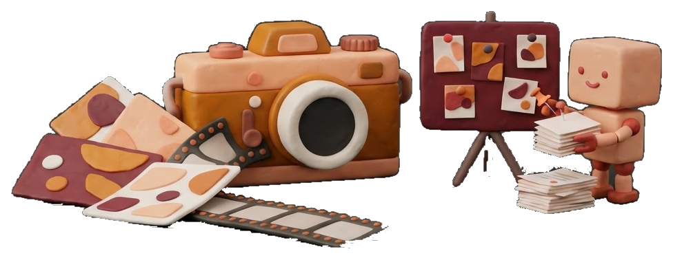
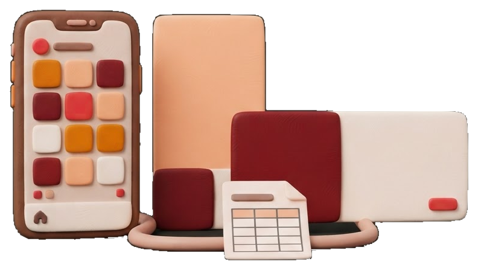

Je genereert beelden en video met AI-tools zoals Weave, en leert hoe je met goede prompts een consistente stijl bewaakt. Met Claude Cowork laat je AI zelfstandig taken uitvoeren op je eigen bestanden: teksten schrijven, documenten opmaken en content plannen. Je ontdekt waar AI je werk versnelt en waar je zelf moet bijsturen.

- Teksten schrijven
- Documenten opmaken
- Content plannen
Social media: Figma automation

In Figma Buzz bouw je templates voor verschillende formaten, zoals Instagram-posts, stories en display-banners. Via bulk create vul je die templates automatisch met data uit een CSV- of XLSX-bestand: titels, taglines, call-to-actions en afbeeldingen. Eén spreadsheet levert zo een volledige campagne op in alle formaten, met een consistent design.
Creative Automation
Een volledige campagne in alle formaten
Bulk createCreative Automation
Een volledige campagne in alle formaten
Bulk createCreative Automation
Een volledige campagne in alle formaten
Bulk create